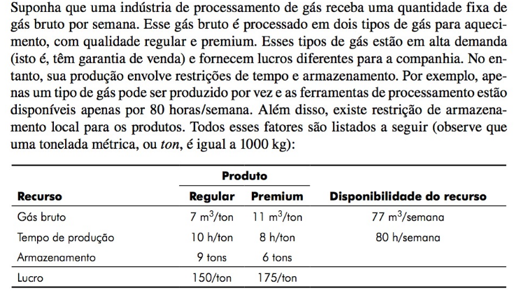

Introdução
Na engenharia obtemos várias soluções para um determinado problemas. O desafio é encontrar uma solução ótima considerando todas as restrições. Tudo depende do objetivo almejado, seja maximizando o lucro ou minimizando o custo de uma operação por exemplo.
fonte: https://atemporaledesign.com.br
O lpSolve é um software gratuito para resolução de programação linear, Linear/inteira e entre outras que possui funções disponibilizadas para linguagem R.
Na área de otimização Programação se relaciona com o tipo de problema a ser resolvido. Ela é do tipo linear quando a função a ser otimizada e suas restrições são lineares. Já a Linear inteira é quando algumas ou todas as variáveis são inteiras.
Existem também problemas de designação que lida com transporte.
Problema
Exemplo 15.1 do Chapra1.

Variáveis:
\[ x_1 \Rightarrow Regular \\ x_2 \Rightarrow Premium \]
Função objetivo:
\[ Maximize\, Z= 150 x_1 +\, 175x_2 \]
Restrições:
\[ 7x_1\,+11x_2\, \leq 77\,\,\,\,(restrição\,\,de\,\,material) \]
\[ 10x_1 \,+8x_2\,\leq 80\,\,\,\,\,(restrição\,\,de\,\,tempo) \]
\[ x_1 \,\leq 9\,\,\,\,\,(restrição\,\,de\,\,armazenamento\,\,do\,\,tipo\,\," regular") \]
\[ x_2 \,\leq 6\,\,\,\,\,(restrição\,\,de\,\,armazenamento\,\,do\,\,tipo\,\,"premium") \]
\[ x_1,x_2\, \geq 0\,\,\,\,\,(restrição\,\,de\,\,sinal) \]
Bibliotecas
Formulação do problema
Para resolução do problema será utilizado a estrura de matrizes com os coeficientes das equações.
f.obj <- c(150,175) # Coeficientes da função objetiva
f.con <- matrix(
c(7,11,
10,8,
1,0,
0,1,
1,0,
0,1),
nrow=6, byrow=TRUE) # Coeficientes das equações de restrições
f.dir <- c("<=","<=","<=","<=",">=",">=") #Direção das equações de restrições
f.rhs <- c(77,80,9,6,0,0) # Valores das restrições
modelo <- lp("max", f.obj, f.con, f.dir, f.rhs) Detalhes do problema:
paste("Funão objetiva =", modelo$objective[1],"x1 +",modelo$objective[2],"x2")[1] "Funão objetiva = 150 x1 + 175 x2"Podemos verificar o status do modelo.
if (modelo$status == 0) {
paste("Foi encontrada uma solução viável")
}else{
paste("Não foi encontrada uma solução viável")
}[1] "Foi encontrada uma solução viável"A resposta é um valor numérico sendo 0 indica que foi encontrada uma solução viável e 2 indica que não foi encontrada uma solução viável.
Verificar o objetivo da otimização:
[1] "maximizar a função"O valor da função maximizada:
A solução otimizada:
Ver também
Footnotes
CHAPRA, Steven C. Métodos numéricos para engenharia. 7. Porto Alegre AMGH 2016 1 recurso online ISBN 9788580555691.↩︎